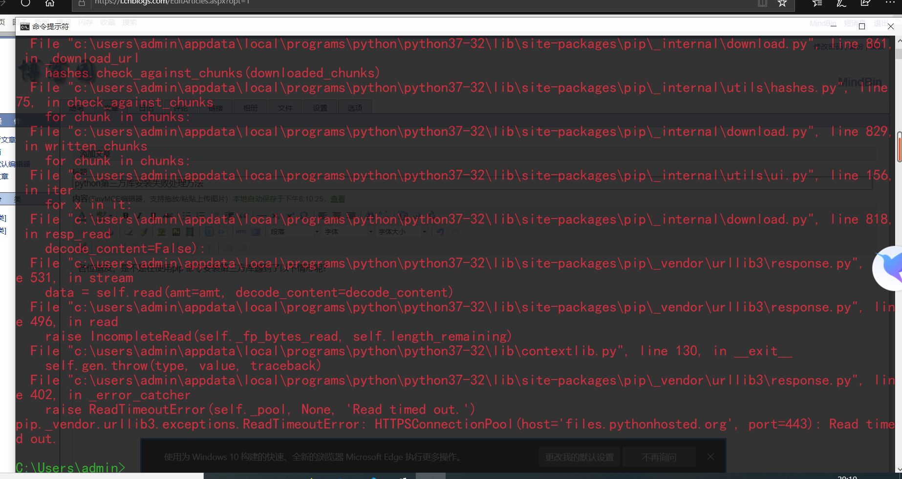
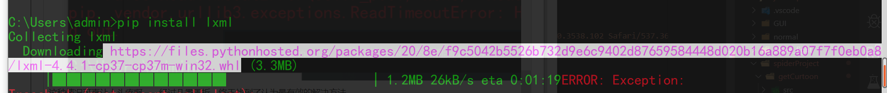
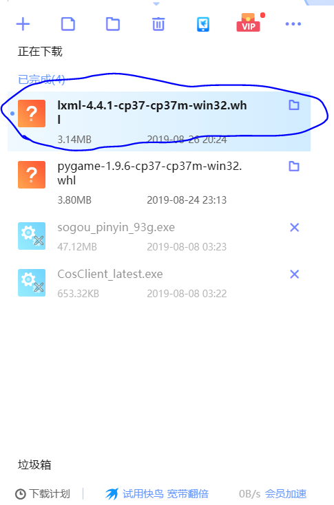
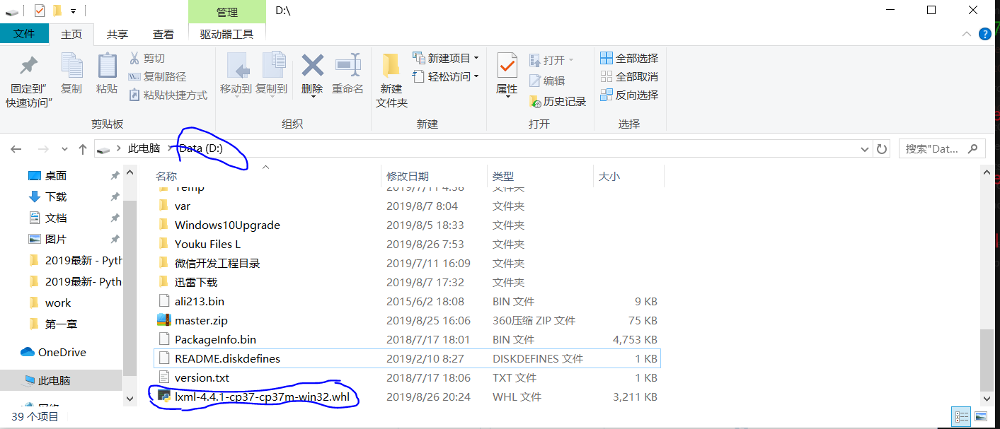
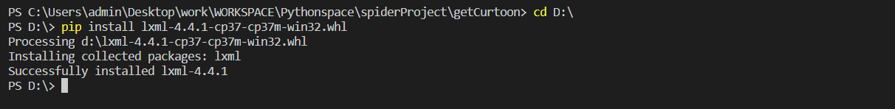

各位道友，是不是在使用pip 命令安装第三方库遇到了以下情形呢？

这种情况可真让人头疼啊。。经过几番周折，终于找到了认为最有效的解决方法
在这里我用的迅雷,链接就不用了说了吧，pip 命令后会显示第三方库的下载链接，如图所示

在这里我用的是迅雷，当然，什么下载方式都可以

如图所示，下载好文件。在把文件放在一个舒服的位置，我放在D盘，你懂得，舒服的位置

接下来的事情就简单了直接在cmd 里输入
pip install D:/lxml-4.4.1-cp37-cp37m-win32.whl这个相当于是本地安装吧，注意，install 后是下载的包的路径，文件名也要带上。
如此一来就这么安装成功了！！！！！

有什么问题可以在留言哦。